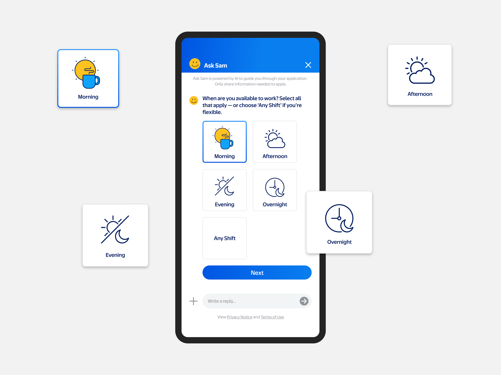

Walmart
Transforming Hiring
with GenAI
Designing a faster, modern hiring experience for Walmart's hourly store associates through a GenAI-powered conversational agent.

Overview
This work didn't begin as a full project — it started as an exploratory ask to envision what an AI-powered candidate journey could look like. After meeting with Paradox, a leader in Chat-to-Apply, I was asked to design what a similar experience could look like for Walmart. Instead of recreating what we had seen, I proposed a differentiated approach.
Within 24 hours, I created an end-to-end concept where candidates could apply, schedule an interview, accept an offer, and learn about Walmart entirely through an AI-driven experience. The concept helped shape internal conversations around the future of AI-enabled hiring and earned early leadership support.
Design Thinking
To define the opportunity, I began by mapping the full end-to-end candidate journey — from initial job search on Walmart's careers site through third-party systems like StoreJobs and assessment platforms. This included identifying handoffs, dead ends, and unnecessary steps that caused drop-off.
I also conducted a competitive audit of hiring flows used by fast food chains and national retailers, focusing on those that attract similar hourly talent. To better empathize with first-time job seekers, I personally applied for hourly roles at competitors and documented every step of their "Chat to Apply" flows, highlighting friction and missed moments of clarity or encouragement.
These insights revealed a fragmented and impersonal experience, particularly when candidates were redirected between systems. In response, I designed a more cohesive and conversational application flow using a visual language that felt human and approachable — setting it apart from off-the-shelf chatbot tools like Paradox.
Why Candidates Gave Up

Where They Dropped Off

This funnel shows how millions dropped off at critical points from creating an account to completing an 80+ screen assessment. Highlighting where trust and effort broke down for first-time applicants.
How the Process Really Worked

By mapping the end-to-end flow, I used systems thinking to reveal gaps where platforms break the flow and add friction. This big-picture view supported my recommendation to remove or rethink the lengthy assessment — saving costs, reducing drop-offs, and rebuilding trust.
Brand Vision for GenAI

Every first step matters. For many teens like Alex, applying for a first job can feel overwhelming. I designed a conversational assistant concept called Sam ("Sparky And Me") — a name created to align with the Me@ product family — to serve as a friendly guide that helps applicants feel understood, supported, and confident in finding their first opportunity.
A New Direction for Hiring at Walmart

I created a distinct visual language, clear entry points, and a conversational Job Finder to help candidates move forward with confidence. This redesign became the foundation for Walmart's new candidate application experience, which Deloitte is currently integrating into the broader hiring platform. As Creative Director, I shaped the vision and ensured the final design remained true to a more human, GenAI-powered hiring experience.